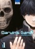
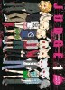
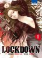
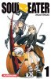

| Titre | Type | Nb de Volumes | |
|---|---|---|---|
|  |
Darwin's Game La vie de Kaname Sudo bascule le jour où ces quelques mots a priori inoffensifs s'affichent sur son portable. Il a le malheur d'accepter l'invitation. Aussitôt mordu au cou par un serpent virtuel surgi de l'écran, il est désormais l'esclave d'un jeu impitoyable, le Darwin's Game, véritable arène... Genres : Action, Mystère, Science-fiction, Thriller, Tournois |
Shonen | 20 |
|  |
Judge Cela fait deux ans que Hiro a perdu son frère ainé Atsuya alors qu'il sortait avec leur amie d'enfance Hikari. Il se réveille alors menotté, dans un endroit sombre et inconnu et avec un masque géant sur la tête. Ne comprenant pas la situation il se retrouve soudain dans une salle ressemblant à un... Genres : Aventure, Drame, Fantastique, Fantasy, Mature, Mystère |
Shonen | 6 |
|  |
Lockdown Un combat sans merci éclate dans un laboratoire gardé par l'armée... Sous une pluie de balles, les assaillants s'enfuient tant bien que mal avec un échantillon d'une arme biologique ultra-secrète ! Pendant ce temps, c'est le début d'une journée comme les autres pour les élèves de la classe de 1re... Genres : Action, Horreur, School Life, Science-fiction |
Seinen | 10 |

|
Magical Girl of the End Kii Kogami est un lycéen que tout ennuie... même ses potes ! Débonnaire, il prend malgré tout la vie comme elle vient, même s'il se dit qu'elle serait peut-être un peu plus excitante s'il arrivait à sortir avec une nana sexy... Mais ça, il ne le saura jamais ! Car son quotidien va basculer dans l... Genres : Fantastique, Horreur, Mature, Mystère, Psychologique, Tragique |
Shonen | 16 |
|  |
Soul Eater Pour devenir une "Death Scyth", les "armes démoniaques" qui ont une apparence humaine doivent se repaître de 99 âmes de démon et d'une âme de sorcière. Ces armes sont pour cela accompagnées de Meister qui les manipule pour la chasse aux âmes. A Shibusen, une école pour jeune Meister dirigée par l... Genres : Action, Aventure, Comédie, Fantastique |
Shonen | 25 |